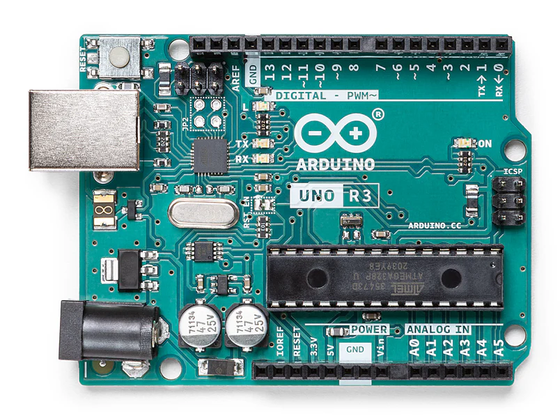
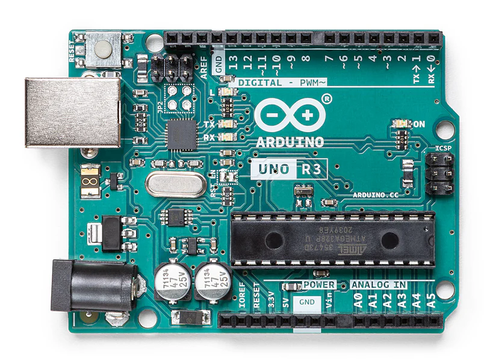

Arduino Uno R3
Razvojna kartica bazirana na ATmega328P mikrokontroleru
Arduino Uno R3 jedna je od najpopularnijih razvojnih ploča u svijetu elektronike i programiranja. Dizajnirana je kako bi bila jednostavna za korištenje, što je čini idealnim izborom za početnike, dok njezina svestranost privlači i iskusne korisnike. Ploča je kompatibilna s raznim modulima i senzorima, što omogućuje širok raspon projekata.
Ova ploča temelji se na mikrokontroleru ATmega328P te nudi digitalne i analogne ulaze i izlaze, što omogućuje interakciju s vanjskim uređajima poput LED-ica, motora, tipki i senzora. Standardno dolazi s 14 digitalnih ulazno-izlaznih pinova, od kojih šest može funkcionirati kao PWM izlazi, te šest analognih ulaza za precizna mjerenja.
Arduino Uno R3 opremljen je USB priključkom za programiranje i napajanje, što korisnicima omogućuje lako povezivanje s računalom. Osim toga, ploča ima ICSP header za naprednije opcije programiranja i ponovno postavljanje bootloadera. Tu je i ugrađeni regulator napona, koji omogućuje napajanje ploče putem vanjskog izvora napona od 7-12V.
Jedna od najvećih prednosti Arduino Uno R3 je otvoreni hardver i bogata zajednica korisnika. Dostupni su tisuće tutorijala, kodova i projekata koji olakšavaju učenje i razvoj vlastitih ideja. Ploča podržava razvojno okruženje Arduino IDE, koje je jednostavno za instalaciju i pruža intuitivno programiranje koristeći jezik temeljen na C/C++.
U zaključku, Arduino Uno R3 je izvrstan izbor za svakoga tko želi istražiti svijet elektronike i programiranja. Bez obzira na to jeste li student, hobist ili profesionalac, ova ploča nudi pouzdanost, svestranost i podršku zajednice za realizaciju gotovo bilo kojeg projekta.
Izvor: Arduino.cc